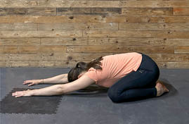

Aktywność fizyczna
3.4.15. Pozycja dziecka
Pozycja dziecka (rycina V.3.20) – rozluźnia struktury lędźwiowego odcinka kręgosłupa, które są szczególnie narażone na przeciążania w ciągu dnia. Pomocna w redukcji stresu i napięcia, ułatwia świadome i głębokie oddychanie. Korzystny wybór na zakończenie sesji treningowej:
Rycina V.3.20.
Pozycja dziecka –
tzw. child pose
Uwagi końcowe do ćwiczeń
Ćwiczenia wykonuj zawsze w wygodnym stroju sportowym, na stabilnym sztywnym podłożu. Jeśli w jakiejkolwiek pozycji będziesz odczuwał duszność, dyskomfort, zawroty głowy – przerwij sesję i skonsultuj się z opiekunem, lekarzem lub fizjoterapeutą.
Pamiętaj!
Lepiej zrobić krok za mało niż o pół kroku za dużo.
436
